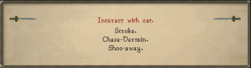
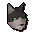
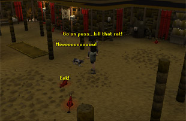
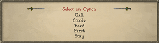

")
Pet Guide
For information about other interesting pets you can have, please read Summoning - Pets.
Cats

Where to get your cat

If you lose your kitten, or you want a new kitten later on, come back to Gertrude and she will sell you one for 100 coins.
Looking after your cat
There are five main types of cat: kitten, grown cat, overgrown cat, wily cat and lazy cat. If you want your kitten to develop further you must take care of it. If you fail to feed your kitten, or pay too little attention to it, it will run away and never come back. It's a lucky thing, then, that looking after your cat is so easy.
Kittens can be fed any fish, cooked or uncooked (except for seasoned sardines - they don't share their mother's taste for spicy food. Also note that seaweed, edible or otherwise, is not a fish), as well as milk. They will also eat any rats they catch, but kittens are too young to be very good at this, so it pays to keep some fish or milk handy.

All cats enjoy hunting rats, and you can do this anywhere you see ordinary level 1 rats running about. Simply right-click on your cat and select 'Interact with', before choosing 'Chase'. Kittens are not very good at hunting rats, but they improve as grown cats, and improve again as wily cats.
If you would prefer to keep your cat away from flea-infested rats, you might like to go to your house and make some clockwork mice in your workshop. Like ordinary rats, your cat will hunt clockwork mice. Be aware that your cat will also destroy them, so you might like to make a few if you plan on training your cat in this way.
No cat ages in your inventory or in the bank, so in order for them to develop you need to take them out into the world. Once your kitten has been active for a sufficient period of time (so, not in your inventory or bank) it will transform into a fully grown cat. Grown cats are better at catching rats and require no more feeding or attention.
![[image]](../../img/main/kbase/minigames/ratpits/kitten1.gif) Kitten |
![[image]](../../img/main/kbase/minigames/ratpits/cat1.gif) Grown Cat |
 Overgrown Cat |
![[image]](../../img/main/kbase/minigames/ratpits/wileycat1.gif) Wily Cat |
![[image]](../../img/main/kbase/minigames/ratpits/lazycat1.gif) Lazy Cat |
After a further period, your cat will transform into an overgrown cat. Overgrown cats cannot hunt rats except in the rat pits, and they will only transform into a wily cat if you take them to be trained by Felkrash, in the Port Sarim rat pit.
Note: You may only upgrade an overgrown cat to a wily cat if you have completed the Rat Catchers quest.
Wily cats are the finest of all hunting cats, and can also run quite quickly. When your cat becomes a mighty wily cat, they also learn how to hunt creatures other than rats: wily cats can hunt kalphite larvae (in the Kalphite Hive) and butterflies. If your wily cat does not get enough exercise, though, it will become a lazy cat.
Lazy cats are not as athletic as wily cats, and can only hunt rats, but they can be retrained to become wily cats again. Should your wily cat become lazy, merely spend some time taking him hunting to work off his excess fat and your cat should transform back into a wily cat. The more time you spend at once exercising your lazy cat, the sooner it will be back to its energetic, wily state.
If you ever tire of your kitten or cat you can rid yourself of them by right-clicking on them, selecting 'Interact with' and then choosing 'Shoo-away'. If you do this the cat will never return, so be very sure that you want to rid yourself of it.
You can own many cats at once, but there are a couple of limitations. You may own as many overgrown cats as you can handle, but only one kitten or grown cat, and only one wily or lazy cat.
Recommended Equipment
![[image]](../../img/main/kbase/minigames/ratpits/amulet_of_catspeak.gif) |
Catspeak Amulet You must complete the Icthlarin's Little Helper quest to gain access to the Catspeak Amulet. The Catspeak Amulet is probably the most valuable item in any cat owner's possession. With it you can not only communicate more clearly with your cat, but you can talk to any cat in RuneScape. If you have had it enchanted (by Hild, early on in Tail of Two Cats) you can also use it locate Bob the Jagex Cat, who is always ready with a joke. If you have lost your Catspeak Amulet, the Sphinx in Sophanem will supply you with a new one, but only if you have a cat with you. To have the Amulet enchanted, take it to Hild in Burthorpe. |
![[image]](../../img/main/kbase/guides/pet/ring_of_charos_unlocked.gif) |
The Ring of Charos (Activated) You must complete both the Creature of Fenkenstrain and Garden of Tranquillity quests to activate the Ring of Charos. This ring allows you to choose the colour of your kitten when you buy it from Gertrude. Simply click '(Charm) I'm quite fussy over cats - can I pick my own?' when Gertrude asks whether you want a new kitten. You will then be presented with a full range of six delightful colours. If you have lost the Ring of Charos (Activated), you will need to return to Fenkenstrain's Castle to steal it again. |
![[image]](../../img/main/kbase/guides/pet/mousetoy.gif) |
Mouse Toy You must have completed the Tail of Two Cats quests to gain access to the mouse toy. The mouse toy is not a particularly effective weapon, but by holding it and walking about you can at least entertain your cat; no cat can resist the way it jumps about, just like a real mouse. If you have lost your mouse toy, return to Bob and he'll give you a new one. Remember, you'll need a Catspeak Amulet to talk to him. |
Other things to do with your Cat
If you take the time to talk to your cat (obviously, you'll need the Catspeak Amulet for this) they'll tell you exactly what they want to do. Most cats will tell you that they want to go hunting, and where they'd like to hunt. You and your cat are not limited to hunting rats in sewers and on streets, however: you may prefer to try one of these other activities:The Rat Pits
The Rat Pits are a small task in which your cat challenges another player's cat in a test to see which of them is the better rat catcher.
Note: Depending on how you play, it is possible for your cat to die in the rat pits.
The Cat Training Medal
If your cat manages to kill 100 rats before it becomes overgrown, take it to Gertrude to receive this wonderful memento of your achievement. Wear it with pride!
Renaming your cat
Felkrash, of the Port Sarim rat pit fame, who can train an overgrown cat into a wily cat, is also able to name and rename wily and lazy cats (up to six letters long). You must have completed the Rat Catchers quest to name your cat.
Selling cats
Though many devout cat owners will think it evil, it is possible to sell your cats. The unfortunate citizens of West Ardougne make their living from catching rats and will pay you 100 death runes for a grown cat, overgrown cat, wily cat or lazy cat. Those adventurers who have completed the easy tasks in the Ardougne Achievement Diary will be offered 200 death runes, if wearing their Ardougne cloak when talking to a West Ardougne citizen. Kittens are not particularly good rat catchers, though, so the people of West Ardougne will not buy them.
Hellcats

Hellcats are no different from normal cats. They have precisely the same limitations and strengths, and a hellkitten will grow into a hellcat. A wily hellcat can still become a lazy hellcat. The only difference is that, if you have a Catspeak Amulet, you will notice that your cat has become quite evil, and doesn't mind telling you exactly what it thinks of you.
If you prefer a friendlier breed of cat, you can undo the effect of the hellrats by feeding your cat some milk.
Famous Cats of RuneScape
Across RuneScape there are dozens of cats. You may encounter a few on your travels and, if you have that all-important Catspeak Amulet, you might like to have a chat and see what they're up to. These are just a few of the more significant cats:![[image]](../../img/main/kbase/npc/chathead/fluffs.gif) |
Fluffs Fluffs is Gertrude's cat, and the cat that starts you on the path to owning and raising cats. It is also Fluffs that supplies all of the kittens that you can buy from Gertrude. When not raising her own kittens she enjoys spending time in the Varrock rat pit. |
![[image]](../../img/main/kbase/npc/chathead/bob_the_cat.gif) |
Bob the Jagex Cat Bob is a bit of an institution around RuneScape, and people are constantly on the lookout for him and his particular type of 'humour'. He can only be reliably found by using an enchanted Catspeak Amulet, but he's always worth the trip. |
![[image]](../../img/main/kbase/npc/chathead/neite.gif) |
Neite Neite holds a special place in Bob's heart, so it's only fair that this qualifies her as famous. She considers family connections to be the mark of good breeding, however, so be prepared to be ignored. |
![[image]](../../img/main/kbase/npc/chathead/evil_bob.gif) |
Evil Bob Evil Bob is a dastardly character, and you can read all about his wicked ways and how to escape his clutches on the Random Events page. |
![[image]](../../img/main/kbase/npc/chathead/sphinx1a.gif) |
The Sphinx The Sphinx is, as you might expect, a mysterious creature. She watches over all the cats of RuneScape from her home in Sophanem and, though she obviously doesn't like people much, she will help you out if you have a cat or kitten of your own. |
Pet Fish
You are not limited to pet cats in RuneScape, and those with a great love of animals might like to try the delights of owning a fish. As fish are simple pets to look after, they're also good for adventurers who aren't sure that they will be able to properly care for a larger animal like a kitten.
The Fishbowl
![[image]](../../img/main/kbase/items/misc/fishbowl_empty1.gif) Although fishbowls are tradable, you will need to have a Crafting level of 42 to be able to make one. It's quite a simple process, and you can find out how to do so by looking under Crafting - Glass Making.
Although fishbowls are tradable, you will need to have a Crafting level of 42 to be able to make one. It's quite a simple process, and you can find out how to do so by looking under Crafting - Glass Making.
Just to recap, you will need a bucket of sand and some soda ash to make the molten glass, and a glassblowing pipe to make that into your fishbowl.
You cannot simply put your fish into this fishbowl, of course, first you must prepare the bowl so that your fish won't feel lonely or get bored. Firstly, and most obviously, you will need to fill your fishbowl with water; next, you must locate some seaweed to put into the bowl to provide the fish with something to hide in (fish are easily frightened, you see).

Clicking on 'Can I get a fish for this bowl?' will prompt Harry to offer you one of his small nets for ten coins, with which you can catch a pet fish in one of his tanks.
Once you have all of this prepared you'll see that the process is quite simple:
Empty fishbowl |
+ | Water |
= | ![[image]](../../img/main/kbase/guides/pet/fishbowl_water1.gif) Water-filled fishbowl |
Water-filled fishbowl |
+ | ![[image]](../../img/main/kbase/items/misc/seaweed.gif) Seaweed |
= | ![[image]](../../img/main/kbase/guides/pet/fishbowl_seaweed1.gif) Habitable fishbowl |
Habitable fishbowl |
+ | ![[image]](../../img/main/kbase/guides/pet/small_net.gif) Small net |
= | ![[image]](../../img/main/kbase/guides/pet/fishbowl_fish_blue1.gif) Pet fish! |
There are three kinds of pet fish: a blue fish, a green fish and a spinefish. There is absolutely no difference between the fish, but you might notice that one type is marginally more common than another. There's no limit to the number of pet fish you may own, though, so there is nothing stopping you from collecting the whole set!
Things to do with your fish
![[image: fish interaction options]](../../img/main/kbase/guides/pet/fish_options1.gif "fish interaction options") Though your pet fish may seem to simply enjoy swimming about its tiny kingdom, finding all the exciting places in the seaweed to hide and nibble upon, you can do much more with it that merely watch as it plays. Right-clicking on your fishbowl will bring up a menu of options:
Though your pet fish may seem to simply enjoy swimming about its tiny kingdom, finding all the exciting places in the seaweed to hide and nibble upon, you can do much more with it that merely watch as it plays. Right-clicking on your fishbowl will bring up a menu of options:
These options are all fairly self-explanatory, but there are a couple of points to note.
- To feed your fish you must have some fish food. Fish food can be obtained by having a rummage through Draynor Manor, or you can make it yourself. To make it you will need to speak to Harry again to ask about fish food. He will say that he has none, but that he has an empty fish food box with the ingredients listed on the side.
![[image]](../../img/main/kbase/guides/pet/fishfood2.gif) To make fish food you will need to grind up the ingredients, so make sure you have a pestle and mortar to do so. Once you have ground up the ingredients, use them on the box to fill it up. Your fish food box will only hold one feeding's worth of fish food, so you might like to keep some more ingredients handy to refill it once you've fed your fish.
To make fish food you will need to grind up the ingredients, so make sure you have a pestle and mortar to do so. Once you have ground up the ingredients, use them on the box to fill it up. Your fish food box will only hold one feeding's worth of fish food, so you might like to keep some more ingredients handy to refill it once you've fed your fish.
- If you choose to drop your pet fish the bowl will smash, killing the poor little blighter and leaving you without its companionship. As pet fish are untradable, you might like to reconsider. It is quite a tragic end for a pet offering so much joy, after all.
Pet Rocks
You must have reached a certain stage in The Fremennik Trials to get a pet rock.
 With all of the maintenance required of cats, and the fact that all a fish does is swim around in circles, you might find a more exciting pet in the chilly lands of the Fremennik Province: a pet rock. This dutiful and affectionate pet can provide hours of entertainment, as well as making a decent weapon if you're in a bind.
With all of the maintenance required of cats, and the fact that all a fish does is swim around in circles, you might find a more exciting pet in the chilly lands of the Fremennik Province: a pet rock. This dutiful and affectionate pet can provide hours of entertainment, as well as making a decent weapon if you're in a bind.
Taking care of your pet rock
The pet rock is an undemanding pet that seems to feed simply on the sense of satisfaction it gets from being owned by someone. As a result, you do not need to provide it with food or exercise.Things to do with your rock
To see what you can do with your rock, click on it to select 'Interact'. This will bring up the following list of options:

If you ever lose your pet rock (oh no!), you can get another by speaking to Askeladden in Rellekka.
Famous rocks from around RuneScape
![[image]](../../img/main/kbase/guides/pet/ancient_rock.gif) |
The Ancient Rock Given that you get your first pet rock from one of the Fremennik, it's no real surprise that the people of the Mountain Camp in the east of the Fremennik Province worship this large and ancient stone. This rock is truly ancient, and it's entirely possible that your own pet rock could be descended from this venerable (if quiet) individual. |
![[image]](../../img/main/kbase/guides/pet/dondakan_s_rock.gif) |
Dondakan's Rock No one can claim to have met a harder rock than this one. You'll encounter it and its defiant ways in the Between a Rock... quest. After all these years, the dwarf and the rock must have some kind of love-hate relationship - something you and your pet rock should never need to worry about. |
![[image]](../../img/main/kbase/guides/pet/falador_rocks.gif) |
The Falador Rocks No one knows where these rocks came from, or who painted the silly symbols over their magnificent rocky grey colour. They sit mysteriously north of Falador, perplexing everyone who encounters them. |
![[image]](../../img/main/kbase/npc/chathead/golem.gif) |
The Golem Okay, so the Golem isn't technically a rock: he's clay. Still, he is the chattiest of the stony inhabitants of RuneScape, so he deserves a mention. If you're keen to have a chat with a stone, you should start The Golem. |
![[image]](../../img/main/kbase/guides/pet/slagilith.gif) |
The Slagilith Not every rock you encounter will be as friendly or as charming as your pet rock, and the slagilith is the perfect example of this. When you encounter it in One Small Favour you should be ready for a rumble. |
![[image]](../../img/main/kbase/guides/pet/rock_crab.gif) |
Rock Crabs A few beasts around RuneScape take advantage of the good reputation of the rock to deceive their prey. The rock crab is possibly the best known of these, and any good rock aficionado should be able to tell the difference between the humble and generous rock and the vicious and deceitful rock crab. |
Rune Guardians

This little pet doesn't eat food like other, more normal pets. Instead, you just have to take it to any of the rune altars. Doing so will nourish your rune guardian and change its colour to reflect the last altar it fed at. Will you treat yours to the hot and spicy delights of the Fire Altar, or the burnt ochre and woody overtones of the Earth Altar? Or how about the tangy, metallic notes of the Blood Altar? And who could pass up on the veritable smorgasbord that is Ourania Altar? You can get another grey rune guardian pet by leaving your current one in your house's menagerie (or letting it go), then speaking with Clerval in the Mage Training Arena's basement.
Rune guardian pets also enable you to change the colour of infinity robes, by taking the robes and pet to one of the four elemental altars - air, water, earth or fire - and using the robes on the altar. To change them back to normal, simply use them on the rune guardian.
Tooth Pets

If you really want one of these, er, things, you can get one from the Tooth Fairy after completing A Fairy Tale Part III - Battle at Orks Rift, but she'll want some teeth in payment. Namely: a suqah tooth (from Lunar Isle), an 'old' tooth (from the Digsite), a human child's tooth (see Gertrude in Varrock), some kebbit teeth (from an obliging sabre-toothed kebbit), and some monkey dentures (from Ape Atoll).

More articles in
Miscellaneous Guides
|
|
|
Further Help
If this article does not help you, you may find the following sections of the RuneScape site helpful:
|
|